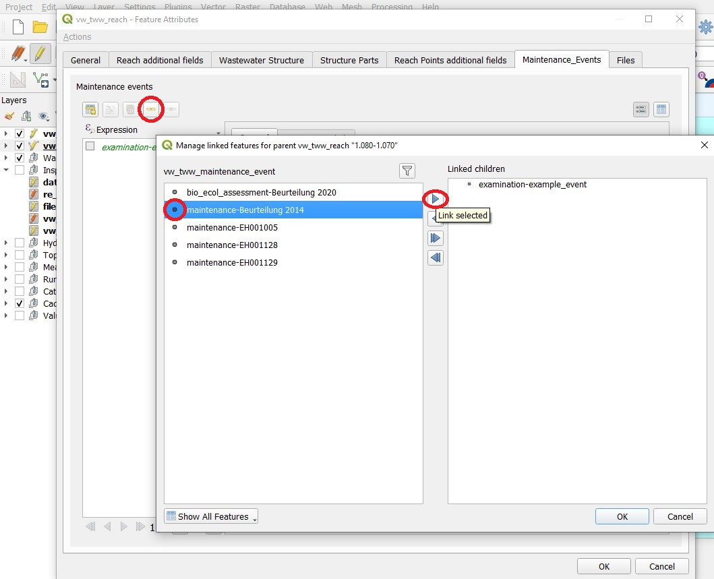
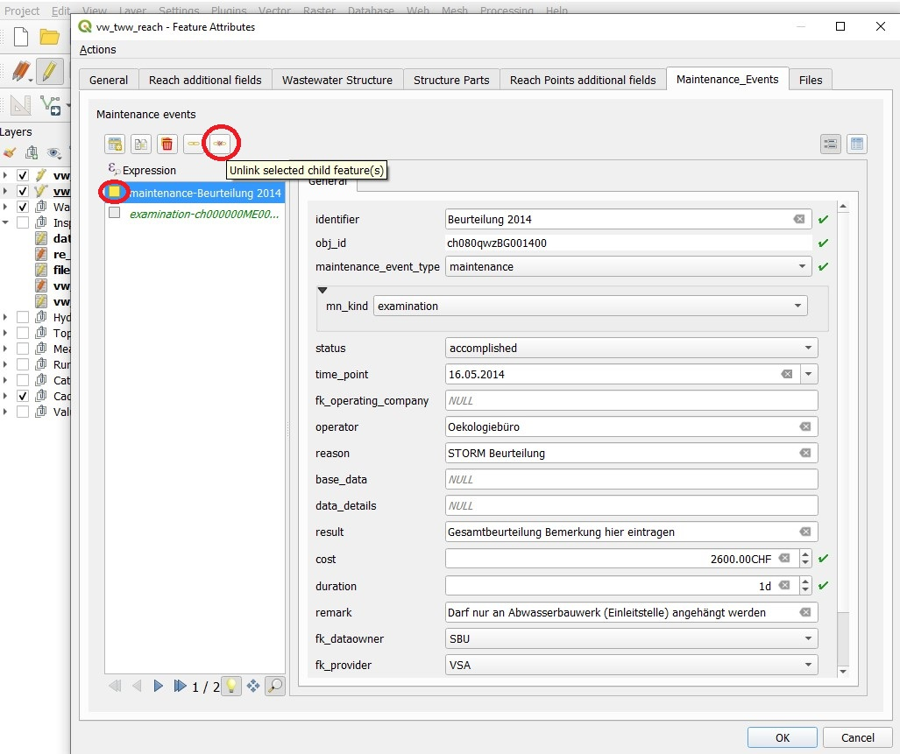

Maintenance events can be connected to one structure or to many.
Therefore TWW uses a intermediary RE_table to model the n:m relationship (re_maintenance_event_wastewater_structure)
Maintenance events can be created or linked at the same time a new wastewater structure or a new reach is created.
With the Identify Features tool you can select wastewater_structures or reaches by selecting their corresponding layer (vw_tww_wastewater_structure or vw_tww_reach).
The respective form will open. Change to the Maintenance_Events tab.
Create a new maintenance event with the Add child feature button.
Edit the new record in the vw_tww_maintenance_event form, then click OK
With the Identify Features tool you can select wastewater_structures or reaches by selecting their corresponding layer (vw_tww_wastewater_structure or vw_tww_reach).
The respective form will open. Change to the Maintenance_Events tab.
Click the Link existing child feature(s) button.

Choose a maintenance event from the Manage linked features for … window by choosing a record. Then click the Link selected button and OK
Close the windows with OK and turn of the edit mode to save changes
With the Identify Features tool you can select wastewater_structures or reaches by selecting their corresponding layer (vw_tww_wastewater_structure or vw_tww_reach).
The respective form will open. Change to the Maintenance_Events tab.
Select a maintenance event by clicking in the box (box gets yellow), then click the Unlink selected child feature(s) button.

Attention
Unlink means, that there is only the record in the RE-table deleted. The maintenance event record itself is not deleted and can by linked with other wastewater structures. When using the Delete selected child feature(s) button, the maintenance_event- and the re_maintenance_event_wastewater_structure-record are deleted.
Multi edit with linked tables is implemented in QGIS. It is possible to create or to link a maintenance event to a selection of reaches or wastewater structures in multiedit-mode.